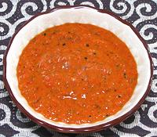

 |
Harissa Chili SauceTunisia - Harissa | ||||
| Makes: Effort: Sched: DoAhead: |
2 cups ** 1 hr Yes |
Used with vegetables, meats and fish, this chili sauce is essential to the cuisine of Tunisia, almost as important in Algeria, and gaining favor in Morocco. It is used in sandwiches as far east as Israel. | |||
| Commercial Harissas I've tasted have been awful. If you can't take time to make your own, you're better off using Huy Fong Chili Garlic Sauce, maybe cut a bit with tomato sauce and add some spices. This recipe makes a fairly mild sauce, but feel free to hotten it up. | |||||
|
|
------- 9 7 4 ------- 1-1/3 1-1/3 1 2 1 1/3 ------- 1 1 1/3 |
--- oz oz cl --- T T t t t t --- T T c |
-- Vegetables Chilis, fresh red (1) Bell Pepper, red Garlic -- Spices Caraway seed Cumin seed Black Cumin seed (2) Paprika, smoked (3) Salt Pepper -- Wet Items Tomato purée (4) Wine Vinegar, red Olive Oil, ExtV |
Make - (1 hr)
|